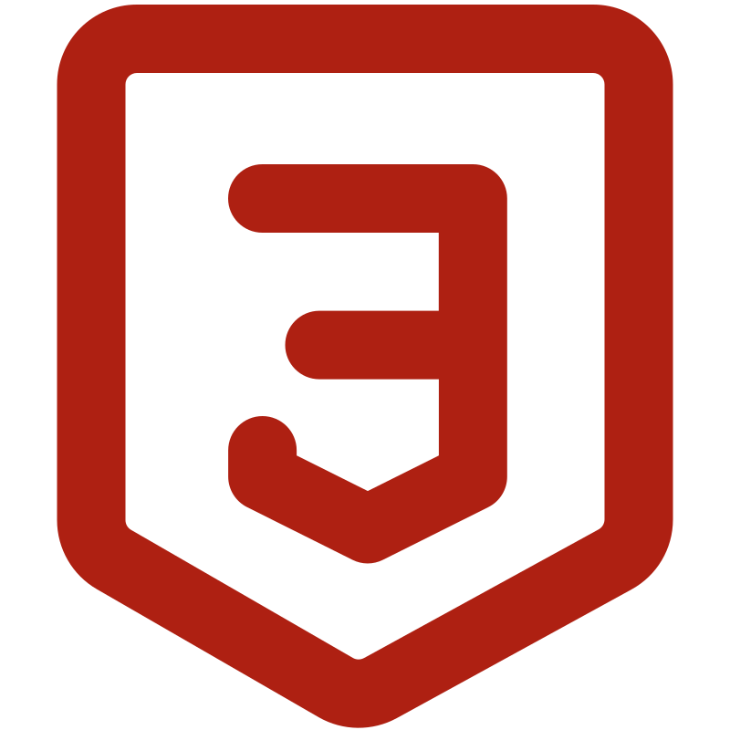
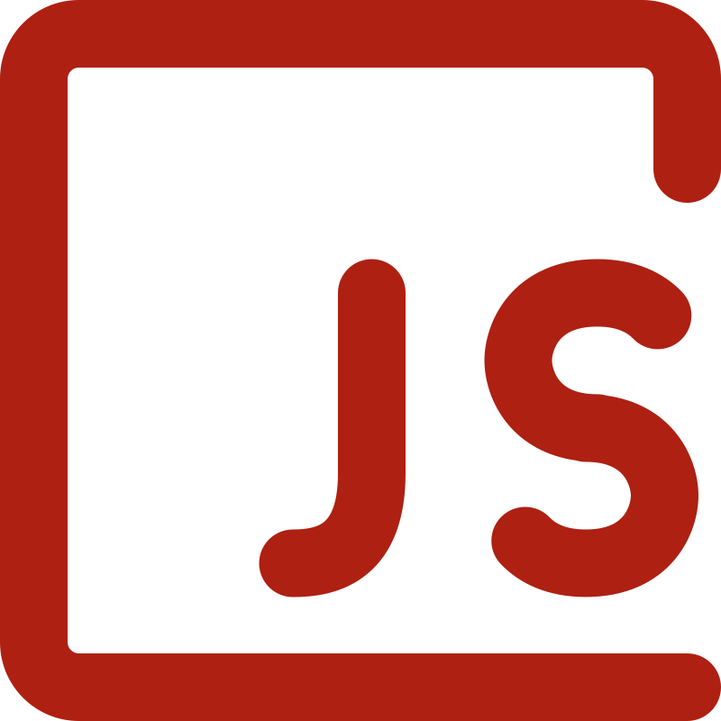
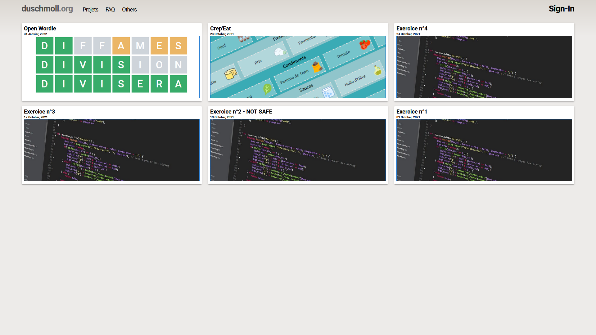

Réalisation d'un site web
J’ai découvert la programmation grâce au cours de mathématiques au lycée, mon premier programme fut de créer le Juste Prix sur ma calculette. Au fur à mesure cette découverte s’est transformée en passion, petit a petit j’ai réalisé différent projets dans le web dont une page web dédiée à l’apprentissage des différentes recettes de galettes proposées par l’entreprise Crep’Eat.


